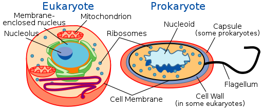

Es la unidad de vida más pequeña, formada por lo menos, de una membrana exterior que rodea a un medio acuoso que contiene moléculas orgánicas, incluido el material genético compuesto de ADN. El siguiente video de Tovi El topo nos permitirá recordar algunos de los conocimientos adquiridos anteriormente.
Las células están protegidas por una membrana plasmática que le da estructura, protección del medio externo, permitiendo la entrada de los alimentos y salida de los desechos, también contienen organelos mediante los cuales llevan acabo su función los cuales se encuentran embebidos en el citoplasma, además, todas las células contienen la información de la célula para realizar todas sus funciones codificada en el ADN.

Science Primer (National Center for Biotechnology Information). Vectorized by Mortadelo2005.. Tipos de célula.(Dominio público)
Existen dos tipos básicos de células diferenciadas por su tamaño y tipos de estructura internas u organelos.
Las células procariotas que se caracterizan por tener su material genético en una región no delimitada conocido como nucleoide, son unicelulares el único Reino que la conforma es el Monera y un ejemplo de esta clase de células son las bacterias.
Las células eucariotas poseen un núcleo en una estructura membranosa llamada envoltura nuclear que contiene su material genético, pueden ser unicelulares con único reino el Protista, o pluricelular con tres reinos Fungi, Plantae, Animalia.
Actividad
Con lo que has aprendido hasta ahora, completa las siguientes oraciones: